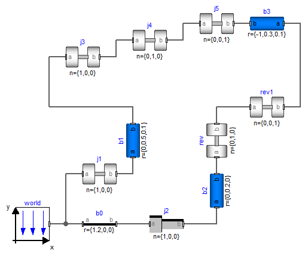
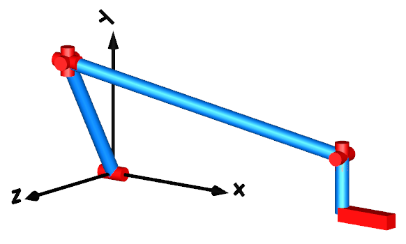

IntroductionIntroduction |
|
Information
This information is part of the Modelica Standard Library maintained by the Modelica Association.
In principal, no special action is needed, if loop structures occur (contrary to the ModelicaAdditions.MultiBody library). An example is presented in the figure below. It is available as MultiBody.Examples.Loops.Fourbar1

This mechanism consists of 6 revolute joints and 1 prismatic joint and forms a kinematical loop. It has one degree of freedom. In the next figure the default animation is shown. Note, that the axes of the revolute joints are represented by the red cylinders and that the axis of the prismatic joint is represented by the red box on the lower right side.

Whenever loop structures occur, non-linear algebraic equations are present on "position level". It is then usually not possible by structural analysis to select states during translation (which is possible for non-loop structures). In the example above, a non-linear algebraic loop of 54 equations can be detected and reduced to a system of 6 coupled algebraic equations. Note, that this is performed without using any "cut-joints" as it is usually done in multi-body programs, but by just appropriate symbolic equation manipulation. Via the dynamic dummy derivative method the generalized coordinates on position and velocity level from one of the 7 joints are dynamically selected as states during simulation. Whenever, these two states are no longer appropriate, states from one of the other joints are selected during simulation.
The efficiency of loop structures can usually be enhanced, if states are statically fixed at translation time. For this mechanism, the generalized coordinates of joint j1 (i.e., the rotation angle of the revolute joint and its derivative; the joint is visualized as a red cylinder at the x-axis in the animation figure above) can always be used as states. In the abovementioned example, this is already stated by setting parameter "stateSelect = StateSelect.always" in the "Advanced" menu of that joint. When setting this flag for joint j1 in that way in the four bar mechanism, a non-linear algebraic loop of 40 equations can be detected and reduced to a system of 5 coupled non-linear algebraic equations.
In many mechanisms it is possible to solve the non-linear algebraic equations analytically. For a certain class of systems this can be performed also with the MultiBody library. This technique is described in section "Analytic loop handling".